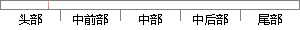

第二章：介绍了恶意域名检测方法的国内外研究现状，对现有方案进行分类，分别简述了其特色和优缺点，并对相关技术应用情况进行介绍。
片段位置图

相似结果|
相似片段 1：实现对大范围的网站页面进行远程检测。一旦检测出网页恶意代码，则可以在第一时间进入预先设定的应急响应方案，缩小公共危害范围。本章首先描述了网页恶意代码的研究背景，然后介绍了发展历程，然后讲述了国内外的研究现状情况，总结出了现有方法的优缺点。1．2相关
|
※ 片段修改建议 ※
近似词参考：- 介绍：先容
- 恶意：歹意
- 方法：方式 要领 法子
- 研究：钻研
- 现状：近况
- 进行：举行
- 分别：别离 划分 离别
- 特色：特点
- 相关：相干
- 技术：手艺 技能
- 应用：利用 运用
- 情况：环境 情形
- 进行：举行
- 介绍：先容
系统自动生成语句：第二章：先容了歹意域名检测方式的国内外钻研近况，对现有方案举行分类，别离简述了其特点和优缺点，并对相干手艺利用环境举行先容。
注：本片段修改建议为系统自动生成，仅供参考。